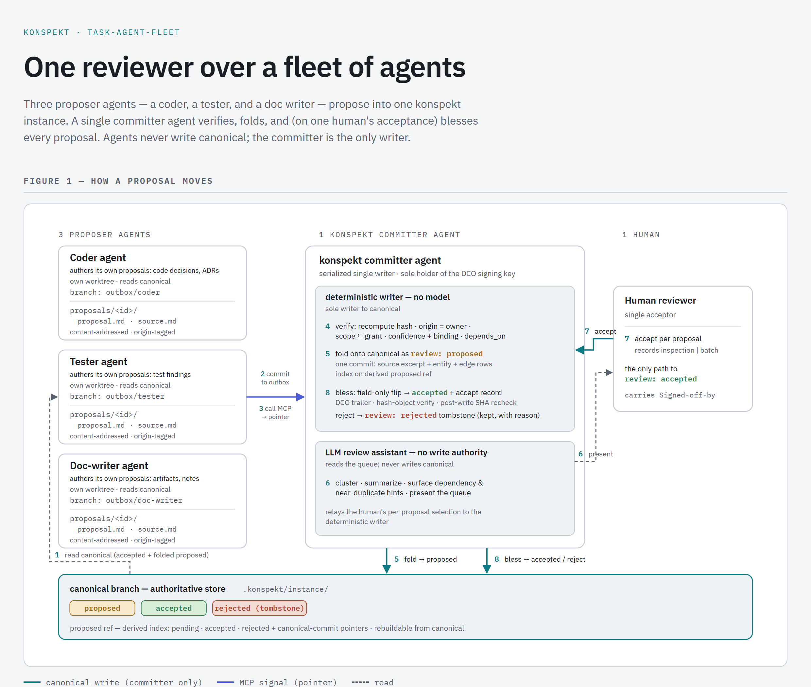

[COVER images/fleet.png — set as the article cover via LinkedIn's cover button]

konspekt keeps the state of an AI-driven project as a typed graph: goals, tasks, decisions, and the verbatim exchanges they came from. The last wave of work made acceptance accountable — a transition log that records who accepted what, an authority model that declares who may accept, and an ordering rule that requires acceptance before work. I closed that write-up by saying the governance layer is what lets the model scale past a single assistant, to a fleet. This is that fleet, running — and running first in a repository that is not konspekt's own.
A fleet is one reviewer over many agents. Several proposer agents work a project in parallel; each writes into the same graph; one human accepts. The layout that makes this safe is a set of linked git worktrees over one shared object store: one canonical worktree on the committer's branch, and one worktree per proposer agent, each bound to its own outbox/<handle> branch. Because a linked worktree binds to exactly one branch, one worktree per agent is one outbox branch per agent by construction — an agent can only write where it is allowed to, and the committer maps a branch back to its owning agent to reject any proposal whose declared origin disagrees.
Between the proposers and the graph sits a deterministic committer, and no model runs on that write path. The committer reads each proposer's outbox, verifies every proposal — that it came from the branch it claims, that its source text hashes to its recorded content address, that the proposing agent holds a grant for that kind of atom, that confidence is in range and the binding resolves — and folds the verified set onto canonical as review: proposed, in one commit. A human then accepts or rejects. The agent's judgment is a proposal; the machine's job is to verify and record; the human's judgment is acceptance. Those three roles never blur.
Standing a fleet up is declarative. One committed file, .konspekt/fleet/config/fleet.json, is the single source for the layout: the canonical branch, the topology, and one entry per agent giving its handle, its role, and the entity types it is allowed to propose. There is no hand-written manifest and no wiring passed on the command line. setup reads the config and stands up exactly the worktrees it names.
The config deliberately leaves two things out. Absolute filesystem paths are not stored, because they break across clones and machines; the committer re-derives each worktree's location at attach time from git worktree list, keyed by the agent's branch. And the runtime index is not stored either, because it is rebuildable from canonical. The config says what the fleet is; the machine figures out where it currently lives. The config is committed on the canonical branch, where the single writer already reads, and it sits in the repo-local envelope beside the operating policy — not inside the portable instance — so a second adopter writes its own and does not inherit this one.
The layout is one half of what a fleet needs configured. The other half is its acceptance authority: the named human who may accept, declared in the instance, and that acceptor's identity, set in the environment the accepting client runs in. That half is a required configuration element too, and setup enforces it in a blocking manner — it is covered below.
The on-disk layout is explicit. The canonical worktree is the repository itself, checked out on the canonical branch — the one tree every reader opens, holding .konspekt/instance/. The proposer worktrees are created as siblings of it, in a directory named after the canonical worktree with a -fleet suffix, one subdirectory per agent:
…/project (on the canonical branch)…/project-fleet/outbox-<handle> (each on outbox/<handle>)So a project at …/cdm-collateral gets its proposer worktrees under …/cdm-collateral-fleet/, one per agent — outbox-spec-writer, and so on. All of them share the one object store under the canonical .git, so a proposer reads canonical as an ordinary sibling-directory read while it writes only to its own outbox branch. The proposer directories hold only their own outbox (the proposals they have authored and not yet had folded); the canonical tree is the only place the graph itself lives. Tearing a fleet down removes the proposer worktrees and keeps the canonical worktree, the object store, and the outbox branches.
Each agent in the fleet is a role, and each role is a skill — a file the agent loads that defines what it proposes and how. The fleet ships five, and they live in a vendor-neutral location, .konspekt/agents/skills/, so tooling from any vendor can discover them; a small sync tool mirrors each one into .claude/skills/ for Claude Code, which only auto-loads from there. The neutral file is the single source of truth and the mirror is a generated adapter.
The five:
The skill–persona map is the config. An agent's role field names its skill, so the config is where you say which personas the fleet runs: spec-writer runs fleet-spec-writer, skill-builder runs fleet-skill-builder, presentation-writer runs fleet-presentation-writer — each over the shared fleet-proposer-common. The agent's entityTypes in the same entry is its propose-grant: the kinds of atom it is allowed to author (for the writer personas, artifacts and noteworthy). Adding or removing a persona is an edit to that one file. The committer runs fleet-committer and holds the write path alone.
The run that matters happened in a separate repository: cdm-collateral, a project modeling collateral agreements under the Common Domain Model, with its own konspekt instance and no shared code with konspekt itself. It adopted the fleet the way any project would. It vendored the committer engine into its own tree, so the engine runs against that repository's own graph. It declared one proposer agent in the committed config. It stood up the worktrees.
Then the loop: a proposer agent, primed only with its role skill, authored a design document, bound it to an accepted task, and committed it to its outbox. The committer verified the proposal and folded it onto the shared graph as proposed. I opened it, read it, and accepted it. Then a second document went through the same path. Two atoms now sit in that project's graph, each carrying its verbatim source, the agent that proposed it, and the named human who accepted it. That is the whole point of the design made concrete: an agent produced durable project knowledge, and the record can say exactly where it came from and who signed off.
Adoption is the real test of a design, because it walks into the assumptions the home project never has to state. This one surfaced a gap immediately.
The first time I accepted a folded proposal in the adopter — through the IntelliJ plugin — the acceptance was written to the transition log with no name attached. The attribution the authority model exists to guarantee was simply missing. The cause was mundane and exactly the kind of thing only an adopter hits: the project had never declared its principals. konspekt's own instance declares a human grantor and a grant, so the client records that identity; a fresh instance that declares nothing has no authority to record, and the acceptance goes through unattributed. Nothing errored. The record was just quietly poorer than it should have been.
Declaring principals fixes the attribution — once an instance names who may accept, the client refuses to write an acceptance without a configured identity. But that only bites at the moment of acceptance. The deeper problem is that a whole fleet could be stood up against a project with no acceptance authority at all, and nothing would say so until the first accept.
So the named acceptor became a configuration element of the fleet, set up in a blocking manner. Setting up a fleet now runs an acceptance-authority preflight before it stands up a single worktree, and refuses when the preflight fails. It blocks on two configuration elements. First, the instance must declare its acceptance authority — a human grantor and an effective grant that names who may accept which part of the graph. Second, that acceptor's identity must be configured in the environment the accepting client runs in, named by a KONSPEKT_PRINCIPAL that resolves to a declared, granted principal. Neither defaults and neither is optional: until both name a real, granted acceptor, setup refuses and nothing is stood up. A new read-only doctor command runs the same checks on demand, from an acceptance client's own shell, and reports what is missing in plain terms.
The effect is that an adopter cannot stand up a fleet that can fold proposals but never attributably accept them. The question "who may accept here, and are they configured?" is answered before the first agent runs, not discovered at the moment someone clicks accept.
A fleet runs on a canonical branch, and a project sometimes needs to move its canonical work onto a different branch and have the agents follow. That is now a defined operation. The committer folds onto whatever branch the canonical worktree currently has checked out, so moving the fleet means moving three things together: switch the canonical worktree to the new branch, update the canonicalBranch field in the config to match it, and merge the new canonical into each proposer's outbox so the proposers author against the new graph. The committer role carries that procedure, so "change the branch, make the fleet follow" is an instruction a committer session can act on directly.
The failure this introduces is a half-done switch — move the worktree but forget the config, and folds land on the new branch while the config still names the old one, with nothing to say so. So it became another checked precondition: doctor and every run-pass now assert the canonical worktree is on the branch the config declares, and refuse when the two disagree. A switch applied only halfway fails loudly at the next pass instead of writing to the wrong branch.
konspekt is built to be adopted: a project carries its own instance, declares its own authority, writes its own fleet config, and runs the engine against its own graph. A second repository exercising the fleet is the portability claim being tested by a project that shares none of konspekt's code. The adopter writes its own two authority tables; it vendors the engine it runs; it stood up the same -fleet worktree layout and drove the same propose-verify-fold-accept loop. The gap it exposed, and the setup gate that now closes it, are improvements the home project would not have found on its own.
That is the argument for the whole governance layer in one run: many proposers are only safe when acceptance is named, constrained, and now checked before the fleet exists. One human stays accountable for what enters the graph, across as many agents as the project cares to run.
The fleet lives under implementations/fleet; the authority model it depends on is specified in spec/architecture/AUTHORITY.md. Which identities an instance declares, who holds a grant, which personas the fleet config runs, and whether basis: accepted is on are host choices that differ per project; the rules that check them, and the setup preflight that now requires an acceptance authority, are the same everywhere.
All of it is on main: github.com/finos-labs/konspekt
#AI #KnowledgeGraphs #Accountability #OpenSource #FINOS #konspekt